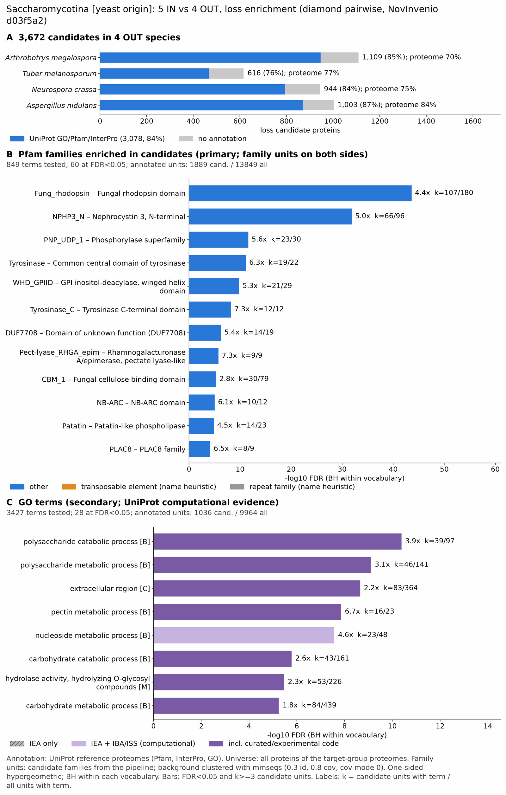

yc saccharomycotina: functional enrichment (loss)
One-sided hypergeometric test per term; Benjamini-Hochberg FDR within each scope, level and vocabulary. Candidates are the loss candidates: gene families present in the OUT group and absent from the IN group. Universe: proteome. Background clustered: True (36001 sequences in 21933 clusters, mmseqs easy-cluster --min-seq-id 0.3 -c 0.8). Family level: one unit per candidate family and per background cluster.
Sources: Pfam: 2026-01-27-Pfam38.2; InterPro entries: 110.0; GO: releases/2026-07-26; analysis generated 2026-10-24T14:27:43. Source tables: /bigdata/stajichlab/jstajich/projects/NovInvenio_Investigations/studies/fungi/yeast_convergence/yc_saccharomycotina/analysis/enrichment/outputs/loss/proteome_clustered.
Full record: PROVENANCE. Run report: report.html.
- Annotation provenance is not fully recorded: PROVENANCE.yaml lists the per-species annotation files and their checksums, but not the UniProt release they come from.
- GO results are secondary. GO annotations include computational evidence (IEA, IBA); the GO evidence column shows if a term has non-IEA support.
- Candidate families (pipeline clustering of candidates) and background clusters (mmseqs clustering of the background proteome) are made by different runs, so family-level counts are not fully comparable.
- Low annotation: the candidate set has less than 50% annotation for GO 37.9%. Enrichment for these vocabularies has low power.
- GO covers only 3 of 4 species: Tubemela, Ncra, Anid. No GO annotation for Amega; this species adds no units to the GO tests, so those results describe the covered species only.
Summary figure

Annotation coverage
Fraction of proteins with at least one term per vocabulary. Universe = all proteins of the species; candidates = the candidate set.
| Species | Set | Proteins | Pfam | Pfam clan | InterPro | GO | Any |
|---|---|---|---|---|---|---|---|
| Amega | universe | 11859 | 63.1% | 51.0% | 69.7% | 0.0% | 69.8% |
| Amega | candidates | 1109 | 77.2% | 61.2% | 84.9% | 0.0% | 85.3% |
| Tubemela | universe | 7494 | 72.4% | 57.3% | 76.8% | 66.5% | 77.2% |
| Tubemela | candidates | 616 | 65.9% | 45.9% | 74.5% | 44.5% | 75.8% |
| Ncra | universe | 9759 | 69.3% | 54.9% | 73.9% | 62.6% | 74.6% |
| Ncra | candidates | 944 | 73.8% | 53.4% | 82.9% | 54.1% | 84.1% |
| Anid | universe | 10561 | 78.2% | 64.8% | 83.1% | 71.4% | 83.7% |
| Anid | candidates | 1003 | 77.4% | 60.9% | 85.8% | 60.3% | 86.8% |
| ALL_OUT | universe | 39673 | 70.4% | 56.8% | 75.7% | 47.0% | 76.1% |
| ALL_OUT | candidates | 3672 | 74.5% | 56.6% | 82.9% | 37.9% | 83.8% |
Tests summary
Per vocabulary: terms with FDR < 0.05 / terms tested. Protein level counts proteins; family level counts candidate families and background clusters.
| Scope | Level | Cand. units | Pfam sig / tested | Pfam clan sig / tested | InterPro sig / tested | GO sig / tested |
|---|---|---|---|---|---|---|
| whole_set | family | 2612 | 60 / 849 | 16 / 336 | 105 / 1814 | 28 / 3427 |
| whole_set | protein | 3672 | 153 / 1851 | 36 / 427 | 272 / 4001 | 85 / 4806 |
| Amega | family | 964 | 21 / 313 | 15 / 233 | 44 / 787 | 0 / 0 (not_available_no_annotated_units) |
| Amega | protein | 1109 | 32 / 380 | 17 / 243 | 59 / 936 | 0 / 0 (not_available_no_annotated_units) |
| Anid | family | 904 | 9 / 352 | 8 / 239 | 22 / 842 | 14 / 2720 |
| Anid | protein | 1003 | 21 / 464 | 11 / 256 | 41 / 1090 | 36 / 2883 |
| Ncra | family | 891 | 2 / 304 | 6 / 240 | 7 / 768 | 14 / 2531 |
| Ncra | protein | 944 | 8 / 367 | 7 / 246 | 22 / 908 | 17 / 2632 |
| Tubemela | family | 595 | 3 / 226 | 2 / 210 | 0 / 611 | 7 / 2382 |
| Tubemela | protein | 616 | 3 / 266 | 3 / 215 | 0 / 710 | 7 / 2448 |
Top 25 Pfam terms (whole set, family level)
25 rows shown, ordered by FDR then p-value; 25 have FDR < 0.05 (bold).
| Term | Name | k / N cand. | n / M bg | Fold | FDR (BH) |
|---|---|---|---|---|---|
| PF20684 | Fung_rhodopsin: Fungal rhodopsin domain | 107 / 1889 | 180 / 13849 | 4.358 | 2.50e-44 |
| PF24883 | NPHP3_N: Nephrocystin 3, N-terminal | 66 / 1889 | 96 / 13849 | 5.04 | 1.29e-32 |
| PF01048 | PNP_UDP_1: Phosphorylase superfamily | 23 / 1889 | 30 / 13849 | 5.621 | 2.45e-12 |
| PF00264 | Tyrosinase: Common central domain of tyrosinase | 19 / 1889 | 22 / 13849 | 6.332 | 7.29e-12 |
| PF22939 | WHD_GPIID: GPI inositol-deacylase, winged helix domain | 21 / 1889 | 29 / 13849 | 5.309 | 1.49e-10 |
| PF18132 | Tyrosinase_C: Tyrosinase C-terminal domain | 12 / 1889 | 12 / 13849 | 7.331 | 5.69e-09 |
| PF24809 | DUF7708: Domain of unknown function (DUF7708) | 14 / 1889 | 19 / 13849 | 5.402 | 5.31e-07 |
| PF12708 | Pect-lyase_RHGA_epim: Rhamnogalacturonase A/epimerase, pectate lyase-like | 9 / 1889 | 9 / 13849 | 7.331 | 1.71e-06 |
| PF00734 | CBM_1: Fungal cellulose binding domain | 30 / 1889 | 79 / 13849 | 2.784 | 5.21e-06 |
| PF00931 | NB-ARC: NB-ARC domain | 10 / 1889 | 12 / 13849 | 6.109 | 9.40e-06 |
| PF01734 | Patatin: Patatin-like phospholipase | 14 / 1889 | 23 / 13849 | 4.463 | 1.39e-05 |
| PF04749 | PLAC8: PLAC8 family | 8 / 1889 | 9 / 13849 | 6.517 | 6.62e-05 |
| PF01476 | LysM: LysM domain | 12 / 1889 | 20 / 13849 | 4.399 | 1.14e-04 |
| PF24355 | DUF7514: Domain of unknown function (DUF7514) | 9 / 1889 | 12 / 13849 | 5.499 | 1.45e-04 |
| PF30466 | CLU5d_N: CLU5d N-terminal domain | 6 / 1889 | 6 / 13849 | 7.331 | 3.41e-04 |
| PF13424 | TPR_12: Tetratricopeptide repeat | 16 / 1889 | 36 / 13849 | 3.258 | 3.41e-04 |
| PF27566 | KpeA: KpeA transcription factor | 9 / 1889 | 13 / 13849 | 5.076 | 3.41e-04 |
| PF24476 | DUF7580: Domain of unknown function (DUF7580) | 11 / 1889 | 19 / 13849 | 4.244 | 3.67e-04 |
| PF11915 | DUF3433: Protein of unknown function (DUF3433) | 8 / 1889 | 11 / 13849 | 5.332 | 5.91e-04 |
| PF13489 | Methyltransf_23: Methyltransferase domain | 15 / 1889 | 34 / 13849 | 3.234 | 5.91e-04 |
| PF24681 | Kelch_KLHDC2_KLHL20_DRC7: KLHDC2/KLHL20/DRC7 Kelch-repeats domain | 11 / 1889 | 20 / 13849 | 4.032 | 5.91e-04 |
| PF01544 | CorA: CorA-like Mg2+ transporter protein | 16 / 1889 | 38 / 13849 | 3.087 | 5.91e-04 |
| PF06985 | HET: Heterokaryon incompatibility protein (HET) | 24 / 1889 | 72 / 13849 | 2.444 | 5.92e-04 |
| PF11913 | DUF3431: Protein of unknown function (DUF3431) | 7 / 1889 | 9 / 13849 | 5.702 | 8.60e-04 |
| PF05577 | Peptidase_S28: Serine carboxypeptidase S28 | 5 / 1889 | 5 / 13849 | 7.331 | 0.002 |
Top 25 InterPro terms (whole set, family level)
25 rows shown, ordered by FDR then p-value; 25 have FDR < 0.05 (bold).
| Term | Name | k / N cand. | n / M bg | Fold | FDR (BH) |
|---|---|---|---|---|---|
| IPR052337 | Family:Satratoxin biosynthesis SC1 cluster protein 4-like | 105 / 2117 | 174 / 15429 | 4.398 | 5.96e-44 |
| IPR049326 | Domain:Rhodopsin domain, fungi | 107 / 2117 | 180 / 15429 | 4.332 | 5.96e-44 |
| IPR056884 | Domain:Nephrocystin 3-like, N-terminal | 66 / 2117 | 96 / 15429 | 5.011 | 2.91e-32 |
| IPR053137 | Family:Nucleotide-binding leucine-rich repeat (NLR)-like | 52 / 2117 | 70 / 15429 | 5.414 | 6.68e-28 |
| IPR035994 | Homologous_superfamily:Nucleoside phosphorylase superfamily | 47 / 2117 | 60 / 15429 | 5.709 | 5.49e-27 |
| IPR000845 | Domain:Nucleoside phosphorylase domain | 23 / 2117 | 30 / 15429 | 5.588 | 3.02e-12 |
| IPR002227 | Domain:Tyrosinase copper-binding domain | 19 / 2117 | 22 / 15429 | 6.294 | 8.76e-12 |
| IPR050316 | Family:Tyrosinase-like | 19 / 2117 | 22 / 15429 | 6.294 | 8.76e-12 |
| IPR008922 | Homologous_superfamily:Di-copper centre-containing domain superfamily | 19 / 2117 | 23 / 15429 | 6.021 | 3.90e-11 |
| IPR054471 | Domain:GPI inositol-deacylase, winged helix domain | 21 / 2117 | 29 / 15429 | 5.278 | 1.80e-10 |
| IPR052210 | Family:Secreted LysM effector LysM1-like | 15 / 2117 | 16 / 15429 | 6.833 | 2.54e-10 |
| IPR041640 | Domain:Tyrosinase, C-terminal | 12 / 2117 | 12 / 15429 | 7.288 | 6.55e-09 |
| IPR011050 | Homologous_superfamily:Pectin lyase fold/virulence factor | 24 / 2117 | 44 / 15429 | 3.975 | 2.48e-08 |
| IPR012334 | Homologous_superfamily:Pectin lyase fold | 24 / 2117 | 44 / 15429 | 3.975 | 2.48e-08 |
| IPR007111 | Domain:NACHT nucleoside triphosphatase | 15 / 2117 | 21 / 15429 | 5.206 | 3.19e-07 |
| IPR036779 | Homologous_superfamily:LysM domain superfamily | 20 / 2117 | 36 / 15429 | 4.049 | 4.68e-07 |
| IPR056125 | Domain:Domain of unknown function DUF7708 | 14 / 2117 | 19 / 15429 | 5.37 | 5.08e-07 |
| IPR015915 | Homologous_superfamily:Kelch-type beta-propeller | 21 / 2117 | 40 / 15429 | 3.826 | 6.68e-07 |
| IPR052895 | Family:Heterokaryon incompatibility protein 6 | 15 / 2117 | 22 / 15429 | 4.969 | 6.90e-07 |
| IPR024535 | Domain:Rhamnogalacturonase A/B/Epimerase-like, pectate lyase domain | 9 / 2117 | 9 / 15429 | 7.288 | 1.54e-06 |
| IPR018392 | Domain:LysM domain | 17 / 2117 | 31 / 15429 | 3.997 | 6.86e-06 |
| IPR000254 | Domain:Cellulose-binding domain | 30 / 2117 | 80 / 15429 | 2.733 | 7.33e-06 |
| IPR002182 | Domain:NB-ARC | 10 / 2117 | 12 / 15429 | 6.073 | 9.27e-06 |
| IPR051693 | Family:UPF0046 metallophosphoesterase | 8 / 2117 | 8 / 15429 | 7.288 | 9.39e-06 |
| IPR035971 | Homologous_superfamily:Cellulose-binding domain superfamily | 29 / 2117 | 78 / 15429 | 2.71 | 1.31e-05 |
Top 15 GO terms (whole set, family level) — secondary, computational evidence (IEA/IBA) included
15 rows shown, ordered by FDR then p-value; 15 have FDR < 0.05 (bold).
| Term | Name | k / N cand. | n / M bg | Fold | FDR (BH) | GO evidence | Families with non-IEA |
|---|---|---|---|---|---|---|---|
| GO:0000272 | biological_process:polysaccharide catabolic process | 39 / 1036 | 97 / 9964 | 3.867 | 4.14e-11 | has_non_IEA | 31 |
| GO:0005976 | biological_process:polysaccharide metabolic process | 46 / 1036 | 141 / 9964 | 3.138 | 7.78e-10 | has_non_IEA | 38 |
| GO:0005576 | cellular_component:extracellular region | 83 / 1036 | 364 / 9964 | 2.193 | 2.22e-09 | has_non_IEA | 39 |
| GO:0045488 | biological_process:pectin metabolic process | 16 / 1036 | 23 / 9964 | 6.691 | 1.39e-08 | has_non_IEA | 15 |
| GO:0045490 | biological_process:pectin catabolic process | 16 / 1036 | 23 / 9964 | 6.691 | 1.39e-08 | has_non_IEA | 15 |
| GO:0009116 | biological_process:nucleoside metabolic process | 23 / 1036 | 48 / 9964 | 4.609 | 2.67e-08 | has_non_IEA | 4 |
| GO:0016052 | biological_process:carbohydrate catabolic process | 43 / 1036 | 161 / 9964 | 2.569 | 1.65e-06 | has_non_IEA | 33 |
| GO:0004553 | molecular_function:hydrolase activity, hydrolyzing O-glycosyl compounds | 53 / 1036 | 226 / 9964 | 2.255 | 3.37e-06 | has_non_IEA | 17 |
| GO:0005975 | biological_process:carbohydrate metabolic process | 84 / 1036 | 439 / 9964 | 1.84 | 5.64e-06 | has_non_IEA | 44 |
| GO:0016798 | molecular_function:hydrolase activity, acting on glycosyl bonds | 56 / 1036 | 252 / 9964 | 2.137 | 7.85e-06 | has_non_IEA | 18 |
| GO:0016837 | molecular_function:carbon-oxygen lyase activity, acting on polysaccharides | 9 / 1036 | 12 / 9964 | 7.213 | 7.05e-05 | has_non_IEA | 7 |
| GO:0016151 | molecular_function:nickel cation binding | 6 / 1036 | 7 / 9964 | 8.244 | 0.002 | IEA_only | 0 |
| GO:0003839 | molecular_function:gamma-glutamylcyclotransferase activity | 5 / 1036 | 5 / 9964 | 9.618 | 0.003 | has_non_IEA | 3 |
| GO:0070652 | cellular_component:HAUS complex | 5 / 1036 | 5 / 9964 | 9.618 | 0.003 | IEA_only | 0 |
| GO:0070008 | molecular_function:serine-type exopeptidase activity | 8 / 1036 | 14 / 9964 | 5.496 | 0.005 | has_non_IEA | 4 |
Actin cytoskeleton controls
Known actin-related families and how many of their proteins pass each filter. Protein ID columns are left out.
| control | pfam_ids | desc_regex | OUT_universe | OUT_in_matrix | OUT_pass_outgroup_rule | candidates | near_miss_in1 | near_miss_in2 | n_Amega | n_Tubemela | n_Ncra | n_Anid | n_Scer | n_Lipostar | n_Ylip | n_Komaphaf | n_Candalbi |
|---|---|---|---|---|---|---|---|---|---|---|---|---|---|---|---|---|---|
| Arp2/3 ARPC2 (P34-Arc) | PF04045 | 4 | 4 | 4 | 0 | 0 | 0 | 1 | 1 | 1 | 1 | 1 | 1 | 1 | 1 | 1 | |
| Arp2/3 ARPC3 (P21-Arc) | PF04062 | 4 | 4 | 4 | 0 | 0 | 0 | 1 | 1 | 1 | 1 | 1 | 1 | 1 | 1 | 1 | |
| Arp2/3 ARPC4 | PF05856 | 4 | 4 | 4 | 0 | 0 | 0 | 1 | 1 | 1 | 1 | 1 | 1 | 1 | 1 | 1 | |
| Arp2/3 ARPC5 (P16-Arc) | PF04699 | 4 | 4 | 4 | 0 | 0 | 0 | 1 | 1 | 1 | 1 | 1 | 1 | 1 | 1 | 1 | |
| Arp2/3 ARPC1 (description only) | arp2/3 complex.*(41|p41|subunit 1)|ARPC1 | 1 | 1 | 1 | 0 | 0 | 0 | 0 | 1 | 0 | 0 | 0 | 0 | 0 | 0 | 0 | |
| Arp2 / Arp3 (description only) | actin-related protein (2|3)\b|\bARP[23]\b | 25 | 25 | 25 | 0 | 0 | 0 | 7 | 5 | 6 | 7 | 7 | 7 | 6 | 8 | 7 | |
| WAVE complex NCKAP1 | PF09735 | 0 | 0 | 0 | 0 | 0 | 0 | 0 | 0 | 0 | 0 | 0 | 0 | 0 | 0 | 0 | |
| WAVE complex CYFIP (FragX_IP) | PF05994 | 0 | 0 | 0 | 0 | 0 | 0 | 0 | 0 | 0 | 0 | 0 | 0 | 0 | 0 | 0 | |
| WAVE complex ABI | PF07815|PF27594 | 0 | 0 | 0 | 0 | 0 | 0 | 0 | 0 | 0 | 0 | 0 | 0 | 0 | 0 | 0 | |
| SCAR/WAVE (SCAR_helical) | PF27569 | 0 | 0 | 0 | 0 | 0 | 0 | 0 | 0 | 0 | 0 | 0 | 0 | 0 | 0 | 0 | |
| WASP family (WH1) | PF00568 | 5 | 5 | 5 | 1 | 0 | 0 | 2 | 1 | 1 | 1 | 1 | 1 | 1 | 1 | 1 | |
| WH2 motif (WASP, WAVE, others) | PF02205 | 8 | 8 | 8 | 0 | 0 | 0 | 2 | 2 | 1 | 3 | 2 | 2 | 2 | 2 | 2 | |
| Formin FH2 | PF02181 | 4 | 4 | 4 | 0 | 0 | 0 | 1 | 1 | 1 | 1 | 2 | 1 | 1 | 2 | 2 | |
| Formin Drf_GBD / Drf_FH3 / Drf_DAD | PF06371|PF06367|PF06345 | 7 | 7 | 7 | 0 | 3 | 0 | 1 | 2 | 2 | 2 | 1 | 2 | 1 | 2 | 2 | |
| Ena/VASP (VASP_tetra) | PF08776 | 0 | 0 | 0 | 0 | 0 | 0 | 0 | 0 | 0 | 0 | 0 | 0 | 0 | 0 | 0 | |
| Coronin (description only) | coronin | 4 | 4 | 4 | 0 | 0 | 0 | 1 | 1 | 1 | 1 | 1 | 1 | 1 | 1 | 1 | |
| Cortactin (HS1_rep) | PF02218 | 0 | 0 | 0 | 0 | 0 | 0 | 0 | 0 | 0 | 0 | 0 | 0 | 0 | 0 | 0 | |
| Myosin 2 tail (Myosin_tail_1) | PF01576 | 1 | 1 | 1 | 0 | 0 | 0 | 1 | 0 | 0 | 0 | 0 | 0 | 0 | 0 | 0 | |
| Myosin head (all myosins) | PF00063 | 18 | 18 | 18 | 0 | 0 | 0 | 4 | 5 | 4 | 5 | 5 | 4 | 4 | 3 | 3 |
Page written by bin/generate_enrichment_page.py.